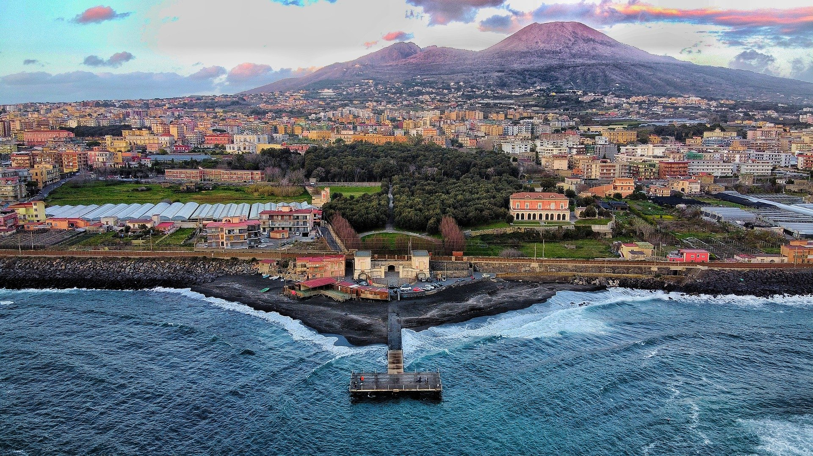
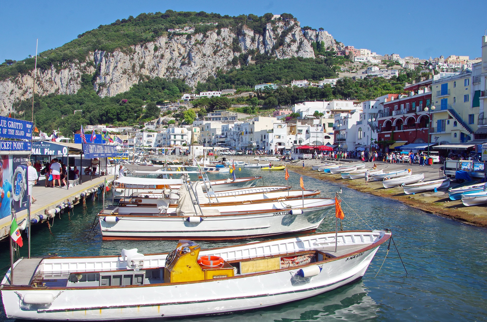
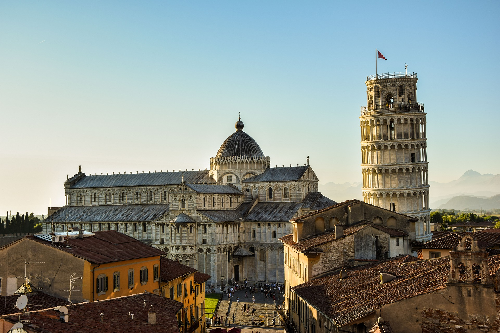
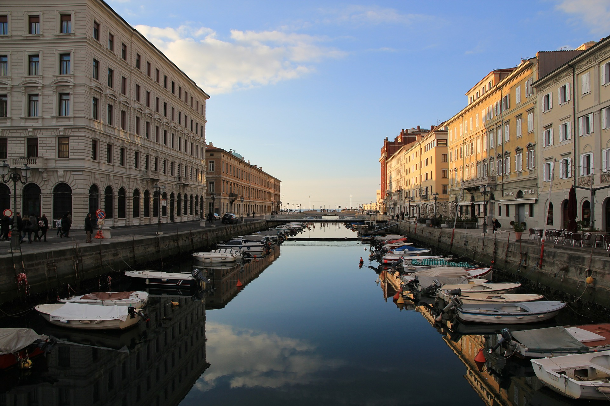

La floreciente ciudad de Roma sigue siendo una de las paradas más importantes del mundo, gracias a su mezcla impecable de maravillas del Viejo Mundo y placeres modernos. Las ruinas del Coliseo, sus icónicas fuentes, los relajados paseos por calles adoquinadas con un helado en la mano: todo esto y más te invitan a acercarte. Roma es una sinuosa y espectacular ciudad llena de lugares para descubrir.
La romántica ciudad de Nápoles está a dos horas al sur de Roma y es la de mayor tamaño del sur de Italia. Tiene algunos de los mejores teatros y salas de ópera del mundo, y se dice que toda ella es un auténtico museo al aire libre debido a todas las estatuas y monumentos que el visitante puede encontrar. Unite a las familias que pasean durante la puesta de sol por la bahía de Nápoles o contemplá el Museo Arqueológico Nacional.
Capri es puro romance. Tiene espectaculares vistas, el mar más azul que hayas visto jamás y un perfume a limón que resulta embriagador. Entre los viajeros son populares la luminiscente Gruta Azul, las sorprendentes rocas Faraglioni y el Palazzo al Mare. Pero si te apetece algo muy especial, tienes que bucear en la playa de Marina Piccola. Se dice que es el lugar en el que Odiseo casi sucumbe al canto de las sirenas.
Florencia hace que los corazones de los amantes del arte latan el doble de rápido. Los fanáticos del arte del Renacimiento se sienten emocionados al recorrer la Galleria dell'Accademia, que está repleta de obras de Miguel Ángel. Los entusiastas de la arquitectura pueden admirar el puente Ponte Vecchio, mientras que los amantes de las compras pueden pasar una tarde de dicha recorriendo las tiendas de la Piazza Santo Spirito.
Pisa, destino turístico por excelencia, es una bonita ciudad toscana con una historia que se remonta al año 1000 a.C., pero que consiguió su fama mundial por el Campo dei Miracolo y su celebérrima Torre de Pisa inclinada. Puedes subir los 300 escalones que te llevan a la cúspide de la torre o visitar otros lugares de la ciudad natal de Galileo tales como el Museo Nacional de San Mateo o el cementerio de Camposanto.
Llamada así por los cinco pueblos de Monterosso, Vernazza, Corniglia, Manarola y Riomaggiore, este escarpado fragmento de costa de la Riviera italiana es tan hermoso que UNESCO la nombró Patrimonio Mundial. Como no se permite ir en coche, la única forma de acceder a Cinque Terre es a través de los trenes locales, por ferry o caminando por los espectaculares senderos que enlazan los pueblos.
Con sus góndolas, canales, increíbles restaurantes y su inolvidable atmósfera romántica, Venecia es, sin dudas, una de las ciudades a incluir en tu lista de deseos. Los edificios, palacios e iglesias a orillas del río hacen que navegar por el Gran Canal se sienta como si estuvieras navegando por una obra de arte. A los amantes de las marcas se les va a hacer agua la boca en las tiendas de alto nivel de la Piazza San Marco.
Con una envidiable ubicación entre el mar Adriático y las montañas de Eslovenia, Trieste es una ciudad italiana cuya comida, arquitectura e historia tienen la esencia del Este. Agregá castillos costeros a los resorts de playa bañados por el sol, y tendrás una de las escapadas de playa más cultas de Europa. Su historia vibrante y atrapante dada su privilegiada ubicación la convierten en una ciudad llena de historia y romance.

Aunque alrededor de la gastronomia italiana pululen narraciones románticas, relatos que reescriben la historia para hacer de sus orígenes una fabulación con tintes idílicos, la mayoría surgen con la conjunción de otras antiguas, como hemos visto. El historiador y periodista John Dickie publicó a principios de 2015 el ensayo ¡Delizia!: La historia épica de la comida italiana, una obra en la que se deshacen mitos en torno a esta gastronomía que nos ocupa y se buscan verdaderos orígenes.
Conoce más